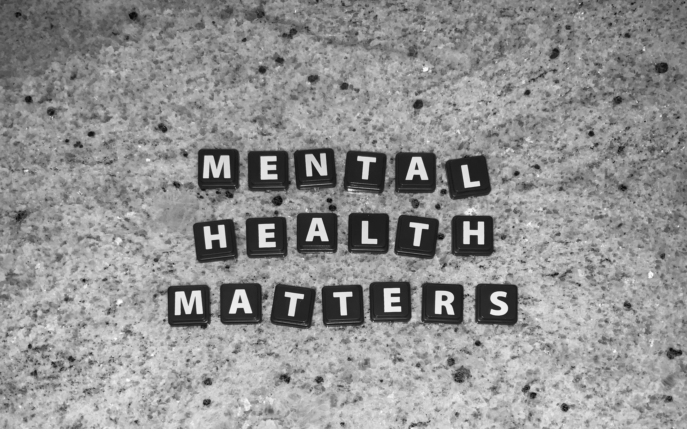

Education
This page isn't meant to be taken as medical advice but should rather be used as a gadge on wether you should seek out treatment or not.
Education in regards to mental health is very important because education allows you to recognize symptoms of certain mental health disorders and realize that someone needs help.

Anxiety Disorders:
Generalized anxiety disorder (GAD)
Definition
GAD is characterized by excessive anxiety and worry on the majority of days for over 6 months. GAD shows anxiety in everyday life and normal routines. Those with GAD often assume the worst case scenario and fear that things like a simple cold will end up being deadly. GAD is not confined to features of other anxiety disorders like social anxiety.
Symptoms
-Restlessness
-being easily fatigued
-having difficulty concentrating
-irritability
-muscle tension
-disturbed sleep
-demoralisation
-facing difficulties carrying out normal routines.
Caution
GAD is often present along with depression which can make it hard to diagnose
Panic Disorder
Definition
Having occasional apprehension and panic attacks (strong short-lived anxiety and intense fear) for at least one month. Panic attacks can either be a response to a feared object or seemingly occur for no reason and unexpectedly. Oftentimes those with panic disorders develop agoraphobia.
Symptoms
Pounding heart, rapid heart rate, numbness or tingling, sweating, chills or hot flashes, trembling or shaking, nausea, abdominal pain, shortness of breath, smothering sensation, feeling detached, chest pain, fear of losing control, feeling dizzy, feeling faint, feeling light headed, feeling of choking, and fear of dying
Caution
When experiencing a panic attack, some people may feel as though they are having a heart attack and seek emergency care
Agoraphobia
Definition
Intense fear of situations where it would be hard to deal with panic symptoms or escape the situation or it would be embarrassing to do so. Additionally, the fear is intensely upsetting or interferes with normal everyday activities. The fear is out of proportion and generally lasts six months or more.
Symptoms
Someone with Agoraphobia would experience fear in two or more of these situations: Using public transportation, Being in open spaces, Being in enclosed places, Standing in line or being in a crowd, or Being outside the home alone. Additionally, someone with Agoraphobia would actively avoid these situations, require a companion, or endure the intense fear or anxiety.
Caution
If left untreated, Agoraphobia may worsen to the point that the individual may not be able to leave their home.
Social Anxiety Disorder
Definition
It is characterized by intense fear of social situations and impaires the way one performs at either work or school. This intense fear is often related to being judged or embarrassed in front of peers. This leads to the avoidance of social situations. It can be triggered by both real and imagined scrutiny by others. In order to be diagnosed, you must have been experiencing this social anxiety for 6 months or more.
Symptoms
-Excessive blushing
-sweating
-trembling
-palpitations
-nausea
-panic attacks
-alcohol or drug misuse.
Caution
It is often present with other disorders such as depression.
Specific phobias
Definition
An intense irrational fear created by the presence or anticipation of a feared object or situation. The fear happens immediately after seeing the object or situation. The individual recognizes the fear to be excessive and unreasonable but is still overwhelmed by it. In order to be diagnosed, you must experience this phobia for 6 months or more.
Examples of most common phobias
public speaking, heights, flying, injections, spiders, etc
Personality Disorders:
Caution
Those with personality disorders may not recognize that they are behaving in unhealthy ways and may be unwilling to change.

Borderline Personality Disorder (BPD)
Definition
Borderline Personality Disorder occurs when an individual shows a pattern of extreme changes in self-image, impulsive actions, and troubled relationships. People with BPD find it hard to control or stop these extreme emotions and impulses. This may cause their relationships with their friends and family to become strained. This disorder can last many years (especially when left unchecked). These extreme changes in behavior and thought are seen in at least 5 of the following situations:
-A pattern of unstable and intense relationships (Example: switching between loving someone one moment and hating them the next)
-Panicked efforts to stop someone from leaving them
-Self-image is often changing drastically (switching between strong self-assurance to low self-esteem)
-Risky behavior that is fueled by impulse and is often self-damaging (spending sprees, risky sex, substance abuse, reckless driving, binge eating, etc)
-Pattern of suicidal thought or self-harm
-Strong spurts of sadness or anxiety that lasts at least a couple hours and rarely a couple days.
-Feeling empty often (being bored or feeling no sense of purpose)
-Intense anger that exceeds what is reasonable for the situation or having problems controlling anger (frequent fights, losing your temper, or constant anger)
-Paranoid thoughts and feelings caused by stress that don't last long(feeling like others are out to get you) or feeling detached from yourself or the world that, again, doesn't last long.
Symptoms
-Unstable relationships
-Intense fears of being abandoned
-impulsive behavior
-extreme emotions such as intense spurts of anger or anxiety.
Antisocial Personality Disorder (ASPD)
Definition
A repeated lack of care for the rights of others, their safety and the law. Additionally, the individual will often lie, have an issue with alcohol or drug use, act impulsively, and have little to no sense of guilt. While this particular disorder can only be diagnosed in adults (age 18 or older), those who show symptoms similar to ASPD are diagnosed with Conduct disorder. Additionally, in order to be diagnosed, the individual would need to display symptoms for over 3 years.
Symptoms
In order to be diagnosed, an individual would need to exhibit a pattern of lack of care of the rights of others since they were 15, showing at least 3 of the following patterns of behavior:
-Often breaks laws or social norms
-Often lying to others for self gain or for fun
-Often acting impulsive and not being able to plan ahead
-Often in a bad mood and aggressive (several occurrences of physical fights or altercations)
-Often disregards the safety of others or themself
-Often acts irresponsibly
-Lack of guilt (Doesn't care that they hurt or stole from someone)
Cautions
Those with Antisocial Personality Disorder often don't recognize that there is anything wrong with them and won't seek help.
Conduct disorder
Definition
The individual often disregards the rights of other or social conventions. This can appear in the form of hostility towards other people, animals, and destroying the possessions of others, which could cause the individual to get in trouble with the law. Conduct disorder is not diagnosed past the age of 18 and the most impactful symptoms tend to develop during middle school, freshman year, or sophomore year. Typically, symptoms appear before the age of 16, but it is still possible for them to develop them afterwards.
Symptoms
An individual with Conduct disorder will consistently do 1 of the following in the last 6 months and 3 of the following in the last year:
-Bullying/intimidating
-Starting fights
-Using Weapons
-Ruthlessness to people or animals
-Sexual violence
-Purposely setting fires
-Vandalizing
-Stealing
-Breaking into homes
-Exploiting others
-Running away from home
-Skipping school
-Staying out late
Risk factors
Several environmental factors can make a child more likely to develop conduct disorder. This includes having strict parents, seeing or experiencing physical or sexual abuse as a child, having a volatile upbringing, the mother drinking during pregnancy, the parents abusing alcohol and commiting crimes during childhood, and experiencing poverty.
Avoidant Personality Disorder (AVPD)
Definition
AVPD is characterized by an extremely low self-esteem and a high sensitivity to criticism. People with this disorder generally try to avoid being social, caused by their terror of rejection. Unlike Social Anxiety disorder, which has the same avoidant behavioral pattern, AVPD avoids being social due to lack of self-worth rather than anxiety. However, it is also possible to have both disorders at the same time. In order to be diagnosed, it must be shown that how the individual acts is problematic and not changing over time. Typically, it is not dignosed before 18.
Symptoms
-Rather be alone then with people because of the individual's fear of rejection (Main symptom)
-Seeing yourself as lesser (low self-esteem)
-Fixate on and worry too much about criticism or disapproval
-Hesitant to interact with others if the individual isn't certain that they will like them.
-Becoming nervous about interacting with others (extreme anxiety)
-Avoiding situations that require social interaction
-Being quiet and self-conscious during social interactions due to the fear of humiliating themselves.
-Thinking that feedback is almost always negative even if it was intended to be positive
-Overstating possible future problems
-Rarely tries anything out of their comfort zone
Obsessive-Compulsive Personality Disorder (OCPD)
Definition
OCPD is characterized by the inability to compromise or change one's ways of doing things. This can end up straining relationships and finishing tasks. Someone with OCPD has a hyper fixation on perfectionism, organization, and control. Everything needs to be done their way, and they refuse to compromise or be flexible. They also have unwavering beliefs. In order to be diagnosed, there must be a consistent pattern of this behavior.
Symptoms
-Focusing on and requiring others to follow the details, rules, and organization that they decided upon
-Their perfectionism inhibits their ability to get things done
-Excessive focus on work and output. This can limit time for relationships (familial, romantic, and platonic) as well as hobbies.
-Extreme doubt and inability to make a decision
-Excessive care to prevent “failure” (or what they think is failure)
-Being stiff and stubborn about the way things are done and their beliefs
-Can't compromise
-Hoarding objects (even those without value, sentimental or otherwise)
-Having a hard time working with people or letting them complete tasks on their own unless they do exactly what the individual with OCPD says.
-Often focusing on a single thing
-Recognizing everything as either black or white
-It's hard to deal with criticism
-Concentrates excessively on imperfections in others
OCPD vs OCD
While they sound similar, these disorders are vastly different. OCD is characterized by intrusive thoughts and compulsions, while OCPD is about perfectionism and having things done the “right way.” Additionally, those with OCD tend to realize that they have a problem, while those with OCPD don't recognize that anything is wrong.
Caution
Those with OCPD don't seem to think their behavior is problematic and will often not seek help
Substance Use Disorders:
Alcohol use disorder
Definition
Excessive drinking to a point where it can't be controlled and inhibits functioning at work, school, or in relationships involving family.
Symptoms
Experiencing at least 2 of these symptoms in the past year is an indicator that you have AUD:
-Drinking more or for longer than planned
-Unable to control substance use or cut down usage
-Craving alcohol(can't think of other things)
-Drinking even when it inhibits functioning at home, school, or work
-Keep drinking when it is straining relationships with family or friends
-Stop attending valuable social, professional, or fun activities in order to drink
-Continuously using alcohol in dangerous places where you can be harmed physically
-Having a tolerance to alcohol (needing to drink more to get drunk)
-Going through withdrawals when stopping alcohol usage (trembling, jittery, queasiness, or sweating)
Caution
AUD is common among adults and often goes untreated. Additionally, it is the 4th leading cause of preventable death in the United States. If you recognize any problem with drinking, you don't need to wait for your condition to worsen to seek out help. It is okay to seek out help even if your condition “isn't that bad.”
Cannabis use disorder (CUD)
Definition
Often using cannabis to the extent that it impairs parts of your life (health, relationships, etc). The user will typically experience a strong craving to use cannabis, a higher tolerance than normal, and having withdrawals. The disorder can be mild, moderate, or severe with the highest form being addiction. Cannabis is defined as any good with significant amounts of tetrahydrocannabinol (THC) compound, most typically marijuana(weed).
Symptoms
-Doing more cannabis then you originally planned to do
-Intense craving to use cannabis
-Trying to limit cannabis use and failing
-Devoting tons of time to obtaining, using, or recuperating from the effects of cannabis
-Can't complete responsibilities in all areas of life due to cannabis use
-Continuing to do cannabis even when it damages relationships
-Giving up social, job-related, and fun activities to do cannabis
-Continuously doing cannabis even if it is dangerous to do so(Example: Doing it while driving a car)
-Keep doing cannabis even if it is triggering or worsening a physical or mental issue
-Having a tolerance to cannabis (need more for same effect)
-Going through withdrawals when you don't take cannabis
-Confusion
-Memory loss
-Hard time learning new things
-Hallucinating
-Pushing away friends and family
-Having mood swings
-Getting defensive when someone tells you that you have an issue with cannabis
-Caring less about how you look
-Hiding cannabis use
Caution
While you need to experience at least 2 symptoms over the last year to be diagnosed, If you or anyone you know starts to show signs of CUD, it is important that you immediately try to seek help. CUD at all severity is important enough to seek treatment.
Nicotine Dependence (Tobacco Use Disorder)
Definition
Being accustomed to having nicotine in your system. This can be through a physical dependence (experiencing withdrawals when you don't take it) or a mental dependence (requiring it to go through day to day activities, in your routine). Nicotine is a stimulant and is typically in cigarettes, vapes, cigars, zyns, etc.
Symptoms
-Needing nicotine to go through your day normally
-Being unhappy, anxious, or cranky
-Going through withdrawals (uneasiness or hard time sleeping)
-Requiring tons of nicotine to feel content
-Being aware of the risks and still doing nicotine
-Desiring to quit but can't
Withdrawal Symptoms
Physical:
-Chest heaviness
-Hard time sleeping
-Feeling light-headed
-Stomach/bowel issues
-Headaches
-Feeling more hungry and gaining weight
-Coughing, dry mouth, throat hurts, and mucus stuck in throat(Nasal drip)
-Queasiness
Mental:
-Feeling lazy, anxious, jittery, or upset
-Can't focus
-Experiencing depression or sadness
Caution
Doing nicotine even once puts you at risk for developing a dependence. Additionally, being a teen further increases your risk. 3 out of 4 teens who smoke continue to do so as an adult.
Prescription and other drugs
While alcohol, cannabis, and nicotine are the most common substance abuse disorders in teens, it is not an exhaustive list of all drug abuse disorders. If you or someone else you know is experiencing addiction to any type of drug, feel free to do additional research with the sites listed under additional resources at the bottom of the page. Additional substance addictions can include but aren't limited to Meth, Adderall, Fentanyl, Oxycodone, Hydrocodone, Cocaine, and Heroin.
Sleep Disorders:
While most are technically not classified as a mental illness, Sleep disorders are often linked to mental issues such as depression, anxiety, and issues socially. If you or someone you know has trouble sleeping, please visit your primary care physician who can refer you to a specialist.
Chronic Insomnia
Definition
Having a difficult time going to sleep or staying asleep. In order for it to be chronic, the insomnia has to last at least 3 months. Additionally, the lack of sleep impacts your ability to function at your peak.
Symptoms
-Hard time sleeping
-Waking up during the night then going back to sleep (most common)
-Waking up before you need to and not being able to fall asleep again
-Feeling poorly, fatigued, or sleepy
-Slow reaction time
-Hard time remembering things
-Having a hard time concentrating or thinking
-Changes in mood (depression, anxiety, or grumpiness)
-Hard time participating in activities of all form
Caution
If left untreated, insomnia and the lack of sleep it creates has a multitude of complications such as, depression, anxiety, high blood pressure, heart attack, stroke, obstructive sleep apnea, Type 2 diabetes, Obesity, and seeing hallucinations (psychosis)
Delayed Sleep Phase Syndrome (Delayed sleep-wake phase disorder)
Definition
Being unable to regulate when you fall asleep, so you stay up at least 2 hours past what time you'd like to fall asleep. This leads to tiredness during the day and inhibits the individual's ability to function properly. You may think you're a “night owl” but night owls do not have this problem. Additionally, a typical week of sleep for an individual with this syndrome will look like the following: Short nights (without breaks) during the week followed by sleeping in late during the weekend. In order to be diagnosed, this must occur for at least 3 months.
Symptoms
-Can't go to sleep at wanted bedtime or at a time society thinks is normal
-Hard time getting up at wanted time or at a time society thinks is normal
-Very sleepy during the day
-Hard time remembering things and concentrating
-Changes in feelings/actions (being annoyed more easily)
Caution
Delayed Sleep Phase Syndrome can complicate into depression(60% of those with the disorder have depression) and Substance use disorder(abusing sleeping pills, alcohol, and caffeine to stay awake or fall asleep)
Hypersomnia
Definition
Hypersomnia is defined as feeling extremely sleepy during the day without being able to control it. Hypersomnia goes beyond just feeling a little tired or wanting to take a nap. It is uncontrollable and can lead to the individual falling asleep involuntarily multiple times a day. This can affect all areas of your life including being able to go to school or work, relationships of all types, and puts you at higher risk of suffering from injuries or accidents. In order to be diagnosed, this must occur for 3 months or more.
Symptoms
-Anxiety, being annoyed easily
-Often feeling really sleepy during the daytime
-Lower energy
-Hard time waking up either after a nap or in the morning
-Being confused or upset when awoken
-Hallucinating
-Headaches
-Loss of appetite
-Hard time remembering things
-Restlessness
-Sleep paralysis
-Sleeping 11+ hours and still feeling tired
-Daytime naps don't help tiredness
-Hard time concentrating
Sleep Paralysis
Definition
Being unable to move right before falling asleep or right after waking up. It can last from a few seconds up to a few minutes. Sleep Paralysis, while not dangerous in and of itself, often causes anxiety during the episode, which can make an individual scared of going to sleep. It can also be a symptom of other sleep disorders. There is no timeline for it to be diagnosed. If it is problematic then seek treatment.
Symptoms
During an episode, the following can occur:
-Can't move arms or legs
-Can't Speak
-Feeling suffocated
-Feeling out of body
-Hallucinating(Someone dangerous in room)
-Sleepy during the day
You may feel:
-Scared
-Alarmed
-Powerless
Nightmare Disorder
Definition
Commonly having nightmares that cause anxiety, disturb sleep, make it hard to work during the day, or produce dread of sleeping. Having nightmares every once in a while isn't worrisome, however if you experience the symptoms below or experience nightmares consistently then seek treatment.
Symptoms
-The nightmares make you wake up and you can't go back to sleep
-They happen often
-Can't function properly during the daytime due to distress or anxiety
-Constant fear
-Scared of going to sleep because you don't want another nightmare
-Can't think or remember things well and constantly thinking of the nightmare
-Tired during the day
-Issues with doing work, doing schoolwork or interacting with others
-Behavioral issues about bedtime or the dark
Caution
Unlike the other sleep disorders, Nightmare disorder is classified as a mental disorder. If you or someone you know suffers from something similar, please seek out therapy.
Life events/Routine and mental health:
Grief/Loss and Transitions
Oftentimes traumatic life events can create temporary trauma that may look like a mental health disorder. For example, the passing of a loved one could make someone very sad for a week. However, it is important to look at the timeline of the disorder you think you have before deciding you probably have it. In the case of this example, the individual would not be classified as having depression as they were only sad for a week and depression lasts at least 2 weeks or more.
Always Remember, Transitions, like moving to a new house, or Suffering from grief and loss may look like disorders but if the symptoms go away quickly then it isn't a disorder
Sexuality/Gender (LGBTQ+)
There is nothing wrong with being LGBTQ+ or identifying as something you weren't born with. However, being LGBTQ+ does put individuals at a higher risk of experiencing mental health disorders such as depression, anxiety, Substance abuse disorders, and suicidal thoughts or actions. This is due to some members of society harassing and refusing to accept those in the LGBTQ+ community for who they are. If you or someone you know is in the LGBTQ+ community and is struggling with mental health, please go to or refer them to the Trevor Project. Call them at 1+(866)488-7386, Text “START” to 678-678, or access their website at https://www.thetrevorproject.org/get-help/
Hygiene
Those who are struggling with mental health issues will often neglect to take care of themselves. Whether it be no longer brushing their teeth, caring how they look, or eating properly, a lack of hygiene is definitely a sign that something is amiss, and the individual may be struggling with mental health.
Other disorders:

Depression
Definition
Depression is the absence of positive emotions in everyday life for a prolonged period of time (over two weeks). This, however, doesn't mean that an individual with depression cannot experience positive emotion at all. Depression rather refers to the baseline being negative rather than neutral.
Symptoms
tearfulness, irritability, social withdrawal, increased pains (both pre-existing and new), A lack of libido, increased fatigue, less physical activity, loss of interest and enjoyment in everyday life, feelings of guilt, feelings of worthlessness, feeling like you deserve punishment, suicidal thoughts, poor concentration, pessimism, lower self-esteem, and lack of confidence
You're not alone
the 988 Suicide & Crisis Lifeline (call or text 988, available 24/7). If you or someone you know is struggling, tell a trusted adult.
Self-Harm/Cutting
Definition
Hurting or cutting oneself to release tension and cope with difficult emotions. While there is a temporary relief after cutting, the difficult emotions return along with guilt. The self-injury or cutting does not necessarily have to be fatal, but it can turn fatal if left untreated and as the disorder becomes more severe.
Symptoms
-Scars, especially in patterns
-New wounds constantly
-Extreme rubbing that causes burns
-Carrying objects for self-harm with themself
-Wearing long shirts and pants to hide wounds even in the summer
-Getting injured "accidentally" often
-Having a hard time in relationships
-Strong impulsive emotions that can change quickly
-Often talking about desperation, powerlessness and uselessness
Forms
Self-injury often happens alone with no one around. It is typically the same every time, which can leave a pattern. Here are some examples of ways that this self-injury happens:
-Cutting or hurting yourself with something sharp
-Burning yourself with a match, cigarette, or a heated sharp object
-Engraving words or symbols on skin
-Hitting, punching, or biting yourself or hitting your head on things on purpose
-Poking yourself with something sharp
-Putting objects under your skin
Caution
All self-injury, regardless of severity, is important enough to go seek out treatment (even if you only do it once). Please tell a trusted adult or dial 988 for support.
Obsessive-Compulsive disorder (OCD)
Definition
OCD is characterized by the presence of either Obsessions or compulsions. However, those who have OCD often experience both. Obsessions are sticky pervasive unwanted thoughts that continuously enter the individual's mind. These thoughts are formed by the individual themselves and not from an external source. Compulsions are repetitive behaviors that the individual would feel forced to perform. A compulsion itself grants temporary fleeting relief but is not pleasurable in and of itself. It is important to try to resist compulsions when one can because the more you give in, the more persistent and strong the compulsions become. An example of the difference between an obsession and a compulsion is an obsession would be fear of contamination from germs, obsessive cleaning would be the compulsion.
Examples
Obsessions can take many forms which include but are not limited to, contamination from dirt, germs, bodily fluids, etc; fear of harm(forgot to lock the front door or the locks aren't enough); obsessive concern with order and symmetry(example: you must eat an even number of everything); obsession of the body and physical symptoms; obsession of religion; Often having sacrilegious or blasphemous thoughts; Sexual thoughts (worried about being a pedophile for example); an urge to hoard useless and worn out things; or violent and aggressive thoughts.
Compulsions can also take many forms which include but are not limited to, checking(locks for example), cleaning, washing, repeating acts, mental compulsions ( praying obsessively or in a set way), ordering (Things must be in the "right" order), symmetry/exactness, hoarding/collecting, and counting.
Caution
Compulsions can take both physical and mental forms. These mental forms of compulsions can often be hard to see or detect. Additionally, these unwanted thoughts, that someone with OCD has, are not pleasant for the individual with them. Instead, these thoughts stress the individual out. For example, a real pedophile would enjoy their sexual thoughts, someone with pedophilia OCD wouldn't.
Post-Traumatic stress disorder (PTSD)
Definition
A stress disorder that develops in response to traumatic events. It often involves forced re-experiencing of the event in a vivid and distressing way. In order to be diagnosed, symptoms must occur for a month or more.
Symptoms
Flashbacks to the event, nightmares, repetitive distressing images and other sensory impressions from the event, Reminders cause intense distress, hypervigilance for threat, exaggerated startle responses, irritability, difficulty in concentrating, sleep problems, avoidance of trauma reminders, amnesia for the event, and emotional numbing (feeling detached and detaching from life)
Additional Resources:
While there are many disorders listed on this website, it isn't an exhaustive list. Here are some additional resources if your symptoms or frame of mind don't match any of the disorders listed:
-Psychiatry.org-Cleveland Clinic
-Mayo Clinic